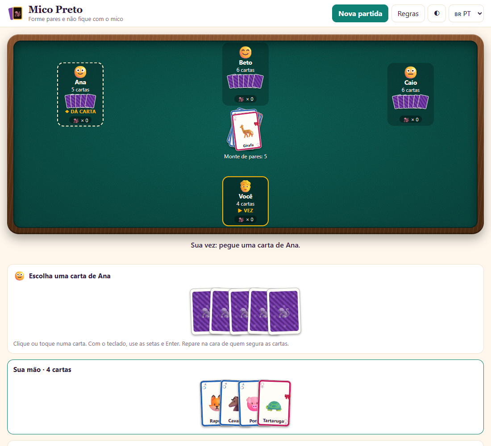
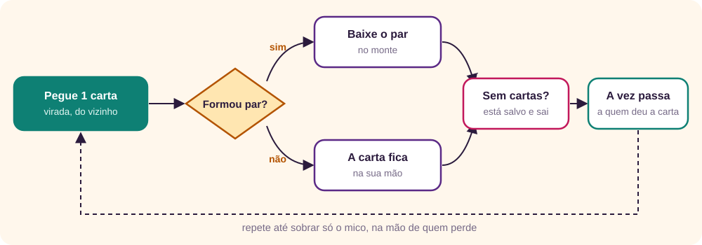
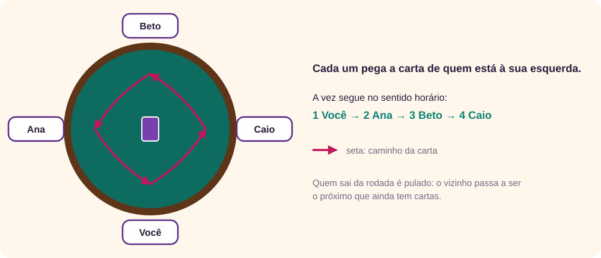
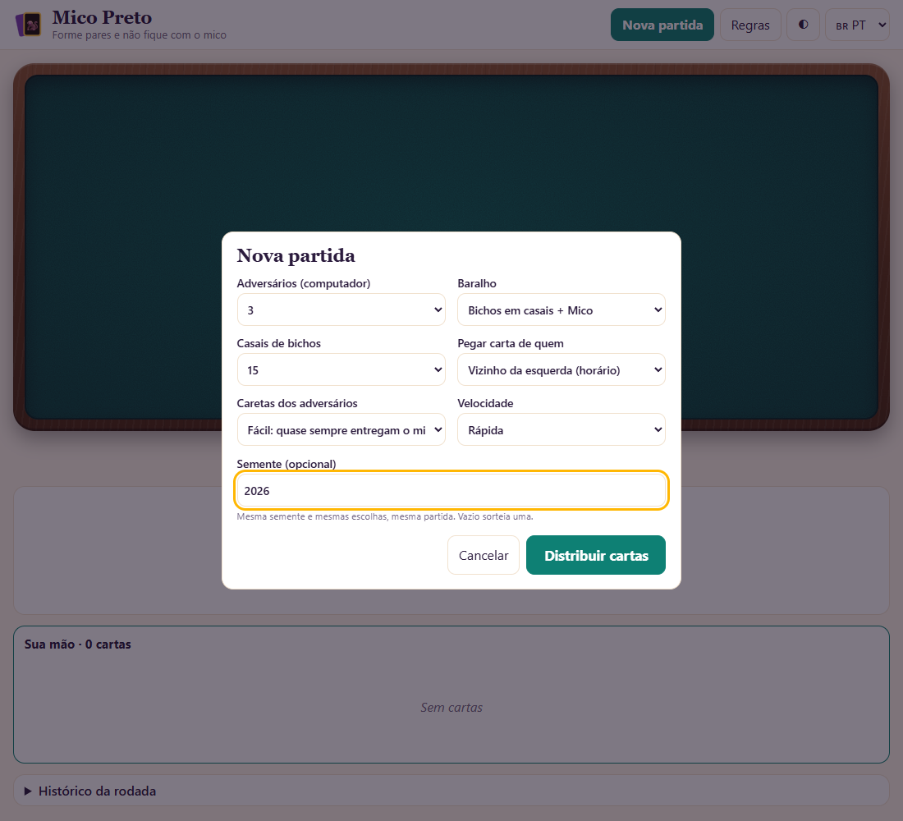
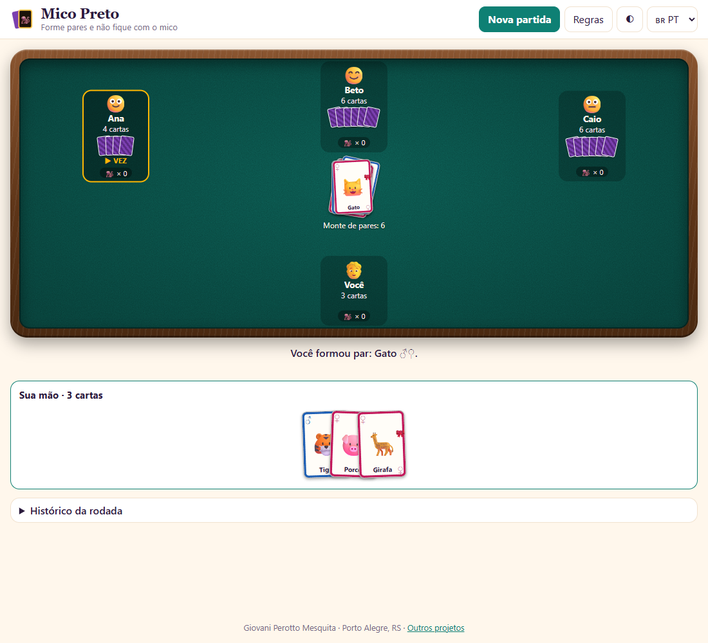
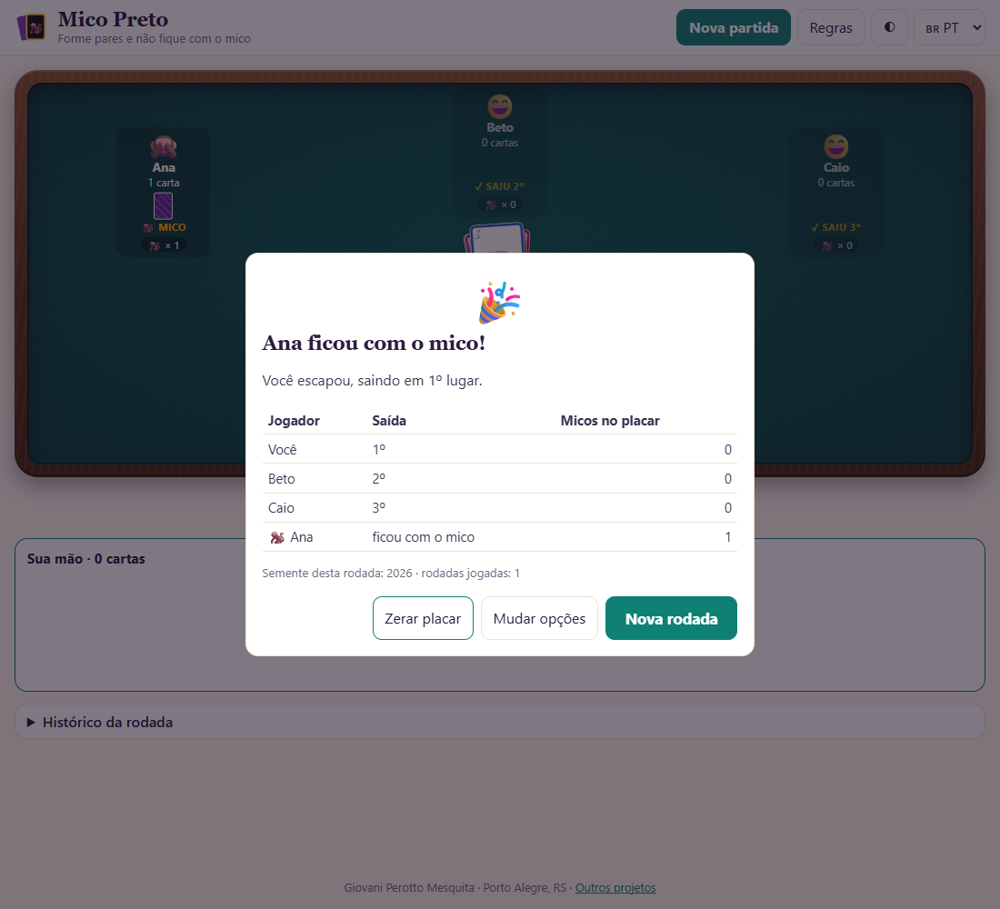
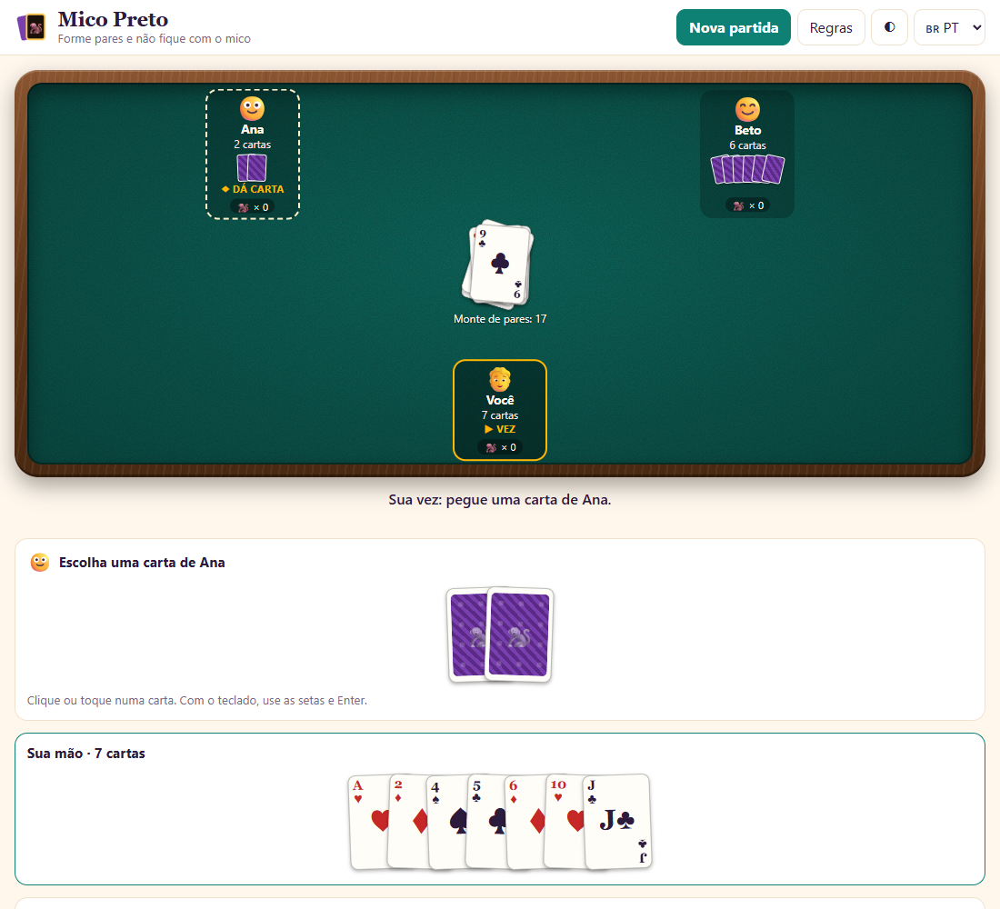
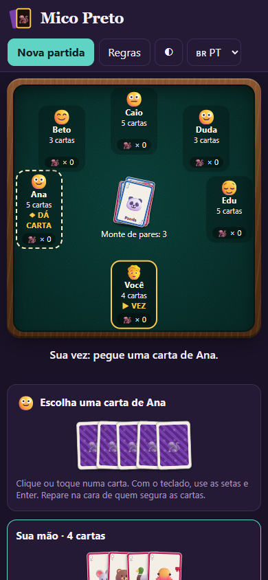
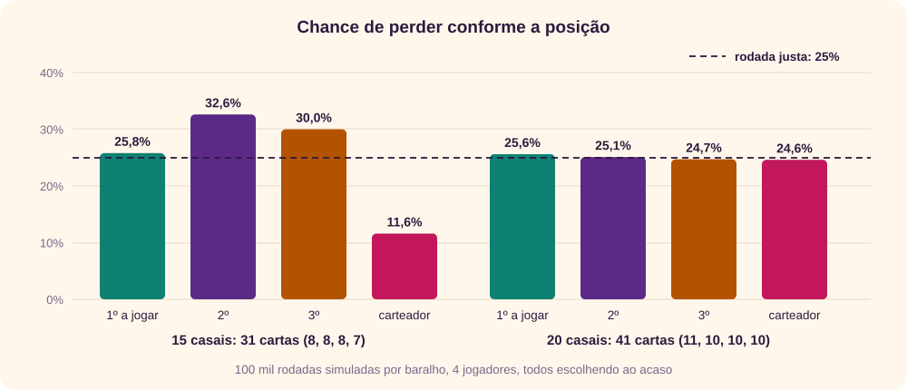
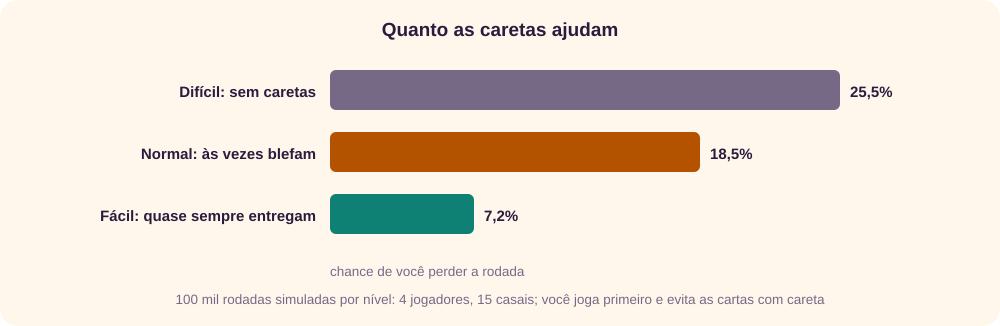

O jogo
O Mico Preto é um jogo de pares. Todas as cartas formam casais, menos uma: o mico. Na sua vez, você pega uma carta, sem ver, da mão do vizinho. Se ela combinar com uma das suas, o par sai da mão. Quem fica sem cartas está salvo. No fim, alguém fica com o mico na mão e perde.
Não há como contar pontos nem planejar dez jogadas à frente: o jogo é quase todo sorte. A graça está na tensão de oferecer as cartas ao vizinho sabendo que o mico está ali no meio, e em tentar adivinhar, pela cara dele, onde o mico se esconde.
O app deste site joga Mico Preto contra o computador, com 2 a 6 jogadores, baralho de bichos ou baralho comum. [1] É um único arquivo HTML, que funciona sem internet e em quatro idiomas.

Uma breve história
Pedro Preto, na Alemanha
O parente mais antigo com data é o Schwarzer Peter (Pedro Preto), da Alemanha. As regras dele já aparecem impressas em 1821, num livro de jogos e numa peça de teatro do mesmo ano. A carta sem par era o valete de espadas, e quem perdia ganhava um ponto preto na testa, no nariz ou na bochecha. [4]
O nome é cercado de lendas. Uma versão diz que o jogo foi inventado na prisão, depois de 1811, pelo ladrão Johann Peter Petri, apelidado de “Velho Pedro Preto”; outra o liga a outro bandido, Peter Nikoll. A própria Wikipédia diz que o jogo pode ser mais velho e só ter mudado de nome. [4] Os baralhos antigos traziam na carta especial limpadores de chaminé, corvos, gatos pretos e, às vezes, uma caricatura racista de um homem negro. [4] O jogo existe com nomes parecidos em boa parte da Europa: Svarte Petter na Suécia, Sorteper na Dinamarca, Černý Petr na República Tcheca, Piotruś na Polônia.
A solteirona, na Inglaterra
Na Inglaterra, o jogo virou Old Maid (a solteirona). As regras de Eliza Leslie mandam tirar três damas de um baralho de 52 cartas, e a dama que sobra é a solteirona. A mesma autora descreve o Old Bachelor (o solteirão), que tira três valetes. Joga-se no sentido horário, pegando a carta do jogador da esquerda. [3] Segundo a Wikipédia, a Old Maid pode ter vindo do Pedro Preto. [4]
O mico, no Brasil
No Brasil, o jogo ganhou baralho próprio: o Jogo do Mico, da Copag, com bichos em casais de macho e fêmea e um mico sem par. Ele é fabricado no país desde a década de 1950, para grupos de dois a seis jogadores, e a origem é desconhecida. [2] O jogo deixou marca na língua: “pagar mico” quer dizer passar por uma situação embaraçosa, e o dicionário registra também o sentido de jogo, em que o mico é quem fica com a carta sem par. [2] [5]
↑ Voltar ao topoDivergências nas fontes. As duas páginas da Wikipédia não concordam na data da regra inglesa: a página da Old Maid cita as regras de Eliza Leslie de 1831, e a do Black Peter diz que as regras inglesas apareceram em 1835. [3] [4] A ligação entre o Jogo do Mico brasileiro e os jogos europeus é provável pelas regras, mas nenhuma fonte consultada a documenta. A fonte sobre os anos 1950 é um site de perguntas e respostas, não um acervo da fabricante.
As regras
O baralho
| Baralho | Como forma par | A carta sem par |
|---|---|---|
| Bichos (como o Jogo do Mico) | macho e fêmea do mesmo bicho | o mico, carta preta com 🐒 |
| Comum, sem três damas (como a Old Maid) | duas cartas do mesmo valor, de qualquer naipe | a dama de espadas, que sobra sozinha |
No app, o macho tem o símbolo ♂ e borda azul; a fêmea tem ♀, borda rosa e um laço. A cor ajuda, mas o símbolo basta para quem não distingue as cores.
A preparação
- Distribua todas as cartas, uma a uma, começando por quem está depois do carteador. Como o total é ímpar, alguns jogadores recebem uma carta a mais. Isso é normal.
- Cada jogador olha a própria mão e baixa os pares que recebeu. No baralho comum, quem recebe três cartas do mesmo valor baixa duas e fica com uma; quem recebe quatro baixa dois pares. [3]
A vez

Quem joga primeiro é quem está depois do carteador. Na sua vez, o vizinho abre as cartas em leque, viradas para baixo, e você pega uma. Se formar par, o par vai para o monte; se não, a carta fica com você. A vez passa então para o vizinho de quem você pegou a carta, que vai pegar do vizinho dele. [2] [3]

O fim
Quem fica sem cartas sai da rodada e está salvo. Como o número de cartas é ímpar e os pares saem de dois em dois, no fim sobra uma única carta, o mico, na mão de alguém. Essa pessoa perde: paga o mico. [2]
↑ Voltar ao topoPasso a passo no app
1. Escolha as opções
Ao abrir o jogo, aparece a janela Nova partida. Para a primeira rodada, use 3 adversários, baralho de bichos com 15 casais, caretas no nível fácil e velocidade normal. Deixe a semente vazia para o app sortear as cartas, ou digite um número para repetir uma partida. Clique em Distribuir cartas.

| Opção | O que faz |
|---|---|
| Adversários | de 1 a 5 jogadores do computador, com os nomes Ana, Beto, Caio, Duda e Edu. |
| Baralho | bichos em casais mais o mico, ou baralho comum sem três damas. |
| Casais de bichos | 10, 15 ou 20 casais, sorteados entre 24 bichos. |
| Pegar carta de quem | vizinho da esquerda, como nas fontes, ou da direita, para quem joga assim em casa. |
| Caretas | fácil, normal ou difícil (veja o passo 3). |
| Velocidade | devagar, normal ou rápida: muda a velocidade das animações e das jogadas do computador. |
| Semente | com a mesma semente e as mesmas escolhas, a partida se repete igual. |
2. Acompanhe a distribuição
As cartas voam do centro para cada assento, uma a uma. Depois, cada jogador baixa os pares que recebeu, e eles vão para o monte de pares, no meio da mesa. Cada assento mostra o nome, quantas cartas a pessoa tem, os micos que ela já pagou no placar (🐒 × n) e uma etiqueta: ▶ Vez para quem joga, ◆ Dá carta para quem vai ceder a carta e ✓ Saiu para quem já ficou sem cartas.
3. Escolha uma carta e repare na careta
Quando chega a sua vez, as cartas do vizinho aparecem viradas na área Escolha uma carta de…. Antes de clicar, passe o mouse sobre elas, ou percorra com as setas do teclado. Quando você encosta no mico, o adversário pode fazer uma careta: o rosto 🙂 vira 😬, no assento dele e no título da área.
| Nível | Quando o adversário faz careta |
|---|---|
| Fácil | em 85% das vezes que você encosta no mico, e nunca nas outras cartas. |
| Normal | em 50% das vezes no mico, e em 12% das vezes numa carta qualquer (blefe). |
| Difícil | nunca: cara de paisagem. |
As caretas são uma invenção do app, para imitar a mesa de verdade, onde muita gente se entrega pelo rosto. As porcentagens são as que estão no código, sorteadas pelo gerador com semente a cada vez. [1] Clique na carta escolhida, ou aperte Enter. Com o teclado: Tab até a primeira carta, setas para andar e Enter para pegar.
4. Veja o par sair
A carta voa para a sua mão. Se ela combinar com uma das suas, as duas voam para o monte, e a linha de aviso confirma: “Você formou par: Gato ♂♀”. Sua mão fica sempre ordenada e à mostra só para você; a dos adversários é embaralhada depois de cada jogada, como fazem as pessoas.

5. Espere os outros e confira o placar
Enquanto os adversários jogam, a área do meio mostra quem pega de quem, e a carta escolhida sobe antes de voar. Quando é a sua carta que vai sair, ela sobe na sua mão. Se você ficar sem cartas antes do fim, aparecem os botões Acelerar e Pular para o fim. O Histórico da rodada, embaixo, lista todas as jogadas.
No fim, a janela mostra quem ficou com o mico, a ordem em que cada um saiu e o placar de micos, que vale de uma rodada para outra. Nova rodada distribui de novo com as mesmas opções; Mudar opções volta à primeira janela; Zerar placar começa a contagem do zero. O carteador muda a cada rodada.

6. Experimente o baralho comum
Em Nova partida, troque o baralho para Baralho comum sem 3 damas. São 51 cartas, e qualquer par de mesmo valor serve. A dama de espadas faz o papel do mico, mas não tem nada de diferente: você só sabe que está com ela porque não há outra dama no jogo.

7. No celular
No celular, os assentos ficam menores e mostram só o número de cartas. Toque numa carta para pegá-la. O botão ◐ troca entre os temas claro e escuro, e o seletor ao lado troca o idioma.

O que os números dizem
Quanto da derrota é sorte e quanto é posição na mesa? Para responder, escrevi uma simulação com as mesmas regras do app (distribuição a partir de quem está depois do carteador, pares baixados no começo, pegar da esquerda) e rodei 100 mil rodadas para cada configuração, com um gerador com semente. Nela, todos escolhem cartas ao acaso. Isso é um modelo, não uma medida de mesas reais: pessoas de verdade fazem caretas, lembram onde o mico foi parar e não escolhem ao acaso.
A chance de pegar o mico numa puxada
Essa parte é conta, não simulação. Se o vizinho tem o mico entre k cartas e você escolhe ao acaso, a chance de pegá-lo é 1 em k: 20% com cinco cartas, 50% com duas. Quanto menos cartas na mão do vizinho, maior o risco. E a chance de receber o mico na distribuição é a sua parte do baralho: com 8 das 31 cartas, 8 ÷ 31 ≈ 25,8%.
A posição pesa, mas depende do baralho

Este foi o resultado que mais me surpreendeu. Com 4 jogadores e 15 casais, que é a opção inicial do app, o carteador perde em só 11,6% das rodadas, e o jogador seguinte ao primeiro perde em 32,6%. Com 20 casais, todos ficam perto de 25%. Rodei de 10 a 20 casais para ver o padrão:
| Casais | Cartas (1º, 2º, 3º, carteador) | Perde o 1º | Perde o 2º | Perde o 3º | Perde o carteador |
|---|---|---|---|---|---|
| 10 | 6, 5, 5, 5 | 28,9% | 22,6% | 24,8% | 23,7% |
| 11 | 6, 6, 6, 5 | 26,6% | 32,3% | 30,2% | 10,9% |
| 12 | 7, 6, 6, 6 | 26,1% | 25,1% | 24,4% | 24,4% |
| 13 | 7, 7, 7, 6 | 31,3% | 12,6% | 24,3% | 31,8% |
| 14 | 8, 7, 7, 7 | 27,1% | 23,8% | 24,6% | 24,5% |
| 15 | 8, 8, 8, 7 | 25,8% | 32,6% | 30,0% | 11,6% |
| 16 | 9, 8, 8, 8 | 25,7% | 25,2% | 24,5% | 24,6% |
| 17 | 9, 9, 9, 8 | 30,8% | 12,7% | 24,4% | 32,1% |
| 18 | 10, 9, 9, 9 | 26,3% | 24,4% | 24,8% | 24,5% |
| 19 | 10, 10, 10, 9 | 24,9% | 32,8% | 30,6% | 11,7% |
| 20 | 11, 10, 10, 10 | 25,6% | 25,1% | 24,7% | 24,6% |
O padrão se repete de 4 em 4 casais e depende de como as cartas se dividem. Quando só o primeiro a jogar recebe uma carta a mais, a rodada fica perto do equilíbrio (com 10 casais, um pouco menos). Quando três jogadores recebem uma carta a mais que o quarto, alguns lugares perdem duas ou três vezes mais que outros. Com 3 jogadores e 15 casais (11, 10 e 10 cartas), as chances ficam em 34,1%, 33,3% e 32,6%; com 6 jogadores, entre 15,3% e 18,9%; e com o baralho comum de 51 cartas e 4 jogadores, entre 24,7% e 25,7%.
A simulação mostra que isso acontece, mas não prova por quê. Uma pista: os pares saem de dois em dois, então a quantidade de cartas de cada um muda de par em ímpar de um jeito previsível, e isso decide quem tende a ficar sem cartas mais cedo. Mesmo com 15 casais, o app é justo ao longo de várias rodadas, porque o carteador muda a cada rodada e todos passam por todas as posições. [1]
Receber o mico na distribuição é ruim?
Menos do que parece, exceto com 2 jogadores. Com 2 jogadores e 15 casais, quem recebe o mico perde em 62,1% das rodadas, contra 39,4% de quem não recebe. Com 4 jogadores, a diferença cai para 26,9% contra 25,4%; com 6, para 19,2% contra 18,8%. Com mais gente, o mico circula muito antes de parar.
Quanto dura uma rodada
Com 15 casais, uma rodada tem em média 8,7 puxadas com 2 jogadores, 24,7 com 3, 40 com 4 e 69,4 com 6. Rodadas longas acontecem: a mais longa com 6 jogadores, nas 100 mil simuladas, teve 223 puxadas.
↑ Voltar ao topoEstratégias
Leia o rosto do adversário
Escolher ao acaso é o que resta quando não há informação. As caretas dão informação. Na mesma simulação, com 4 jogadores e 15 casais, você jogando primeiro e evitando sempre as cartas que provocam careta, a chance de perder cai bastante:

No nível normal, a careta às vezes é blefe, mas evitar a carta ainda compensa: o blefe só acontece em 12% das cartas comuns, e a careta verdadeira em metade das vezes. Passe o mouse em todas as cartas antes de escolher. Os números valem para o modelo do app; numa mesa de verdade, cada pessoa se entrega de um jeito, e algumas fingem.
Saiba onde o mico está
- Se você deu o mico, sabe quem está com ele: o jogador da sua direita. As cartas andam da esquerda para a direita, então o mico só volta a você depois de passar por todos os outros jogadores que ainda têm cartas.
- Se você pegou o mico, não há o que fazer além de torcer para o jogador da sua direita escolher essa carta. A chance dele é 1 dividido pelo número de cartas da sua mão.
- Conte quem saiu. Cada jogador que sai muda os vizinhos. Quando restam dois, um deles tem o mico, e a cada puxada a chance de passá-lo adiante é de 1 em k.
Na mesa de verdade
- Embaralhe a mão depois de pegar uma carta, para que ninguém saiba onde ficou a carta nova.
- Mantenha o rosto parado quando o vizinho encostar em qualquer carta, não só no mico.
- Com crianças pequenas, combine antes se vale fazer careta de propósito. O Jogo do Mico é indicado a partir de quatro anos. [2]
Erros comuns
“Quem recebe o mico já perdeu.”
Não. Com 4 jogadores, quem recebe o mico na distribuição perde em 26,9% das rodadas simuladas, quase o mesmo que os outros (25,4%). Só com 2 jogadores o peso é grande: 62,1%.
“Toda posição tem a mesma chance em cada rodada.”
Depende de como as cartas se dividem. Com 4 jogadores e 15 casais, o carteador perde 11,6% das vezes e o segundo jogador 32,6%. Ao longo de várias rodadas, com o carteador mudando, isso se equilibra.
“A careta sempre diz a verdade.”
No nível normal, 12% das cartas comuns também provocam careta. No difícil, ninguém muda de cara. Use a careta como pista, não como certeza.
“Peguei do vizinho, então ele pega de mim.”
Não. Você pega da esquerda, e quem pega de você é o jogador da direita. A vez segue para a esquerda, e as cartas andam para a direita.
“No baralho comum, três cartas iguais são um par e meio.”
Com três cartas do mesmo valor, você baixa duas e fica com a terceira, que espera o seu par. Com quatro, baixa dois pares.
Variações para jogar em casa
A Wikipédia lista várias variações da Old Maid. [3] Algumas dá para imitar no app; outras, só com baralho na mão.
| Variação | Como funciona | No app |
|---|---|---|
| Old Bachelor | tiram-se três valetes em vez de três damas. | não; o app usa damas. |
| Coringa | junta-se um coringa, que faz o papel da solteirona. | não. |
| Carta sorteada | tira-se uma carta qualquer, sem ninguém ver, e a carta sem par fica desconhecida. | não. |
| Pares da mesma cor | só formam par cartas de mesma cor: espadas com paus, ouros com copas. | não. |
| Scabby Queen | tira-se a dama de paus, e quem perde leva batidinhas nos dedos. | não. |
| Pedro Preto | a carta especial é o valete de espadas, e quem perde leva um ponto preto no rosto. [4] | não. |
| Pegar da direita | a roda anda no sentido anti-horário. | sim, na opção Pegar carta de quem. |
Revisão rápida
1. No baralho de bichos, o que forma par?
O macho e a fêmea do mesmo bicho. O mico não tem par.
2. No baralho comum do app, qual carta faz o papel do mico?
A dama de espadas: as outras três damas são tiradas antes da distribuição.
3. Você pega da esquerda. Quem pega de você?
O jogador da sua direita.
4. O vizinho tem quatro cartas, uma delas o mico. Qual a chance de pegá-lo ao acaso?
1 em 4, ou 25%.
5. Com 4 jogadores e 15 casais, qual posição perdeu menos na simulação?
O carteador, com 11,6% das rodadas. Por isso vale o app trocar o carteador a cada rodada.
6. No nível fácil, quanto as caretas reduziram a chance de perder no modelo?
De 25,5% para 7,2%, evitando sempre as cartas com careta.
7. Para que serve a semente?
Para repetir a partida: com a mesma semente e as mesmas escolhas, as cartas e as jogadas do computador se repetem.
8. De onde vem a expressão “pagar mico”?
Do Jogo do Mico: quem fica com a carta sem par perde, e a expressão passou a querer dizer passar vergonha.
Referências
- Giovani Perotto Mesquita, “Mico Preto”, jogo deste site, giovanipm.github.io/MicoPreto.html. As porcentagens das caretas e a troca de carteador estão no código do jogo. As simulações deste tutorial usam as mesmas regras, num script à parte, com 100 mil rodadas por configuração e escolhas ao acaso.
- Auditório Ibirapuera, “O que é jogo do mico?”, atualizado em 20/02/2023, acesso em 14/11/2026, auditorioibirapuera.com.br/o-que-e-jogo-do-mico. Página de perguntas e respostas, sem autor; é a fonte da data (década de 1950), da fabricante, da faixa de 2 a 6 jogadores e da regra de pegar da esquerda.
- Wikipedia, “Old maid (card game)”, acesso em 14/11/2026, en.wikipedia.org/wiki/Old_maid_(card_game). Cita as regras de Eliza Leslie de 1831 e uma regra moderna de 2011.
- Wikipedia, “Black Peter (card game)”, acesso em 14/11/2026, en.wikipedia.org/wiki/Black_Peter_(card_game).
- Dicio, “Mico”, Dicionário Online de Português, acesso em 14/11/2026, dicio.com.br/mico.